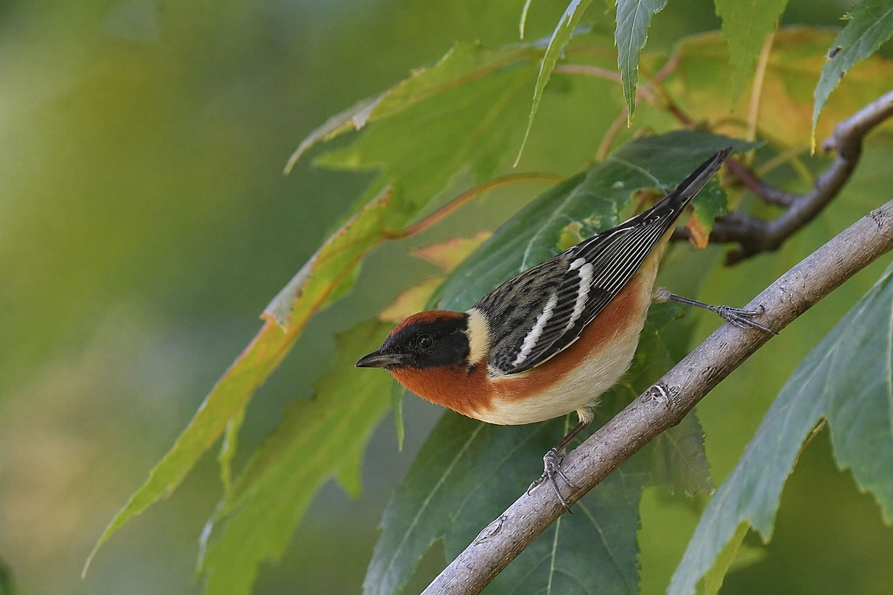
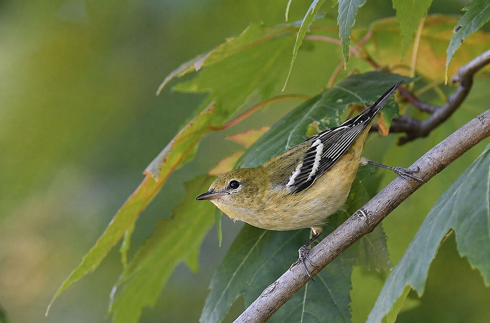

Divers
This annotation combines text with a video. It could also hold audio from the site, a short video clip, or a captioned archival photo.
Digital stories do not have to show everything at once. These patterns use interaction to reveal more information, compare versions, browse collections, or move through visual space.
An accordion stacks sections vertically and lets users expand one or more sections to reveal hidden content. It works best for grouped information where readers may only need some parts, such as FAQs, definitions, steps, background context, or categorized details.
A modal opens content in an overlay above the page, temporarily focusing the reader on one piece of information. It works best for details that need more space or attention but should not require a new page, such as a short profile, explanation, image, video, warning, or source note.

Click the button to open a popup about why marsh birds are easier to detect by sound than by sight.
A tooltip is a small label or note attached to a specific word, icon, point, or interface element. It works best for brief supporting information, such as definitions, labels, clarifications, or quick hints that do not need a full paragraph.

A rich annotation attaches deeper explanatory content to a specific part of an image, graphic, map, document, or scene. It works best when a reader needs to inspect a particular point and see more than a label, such as a photo, caption, audio clip, video, quote, source, or extended explanation.

This annotation combines text with a video. It could also hold audio from the site, a short video clip, or a captioned archival photo.
A flip card hides related information on the back of a card and reveals it when the user clicks. It works best for simple front/back relationships, such as question/answer, term/definition, image/explanation, prediction/result, or “guess then reveal” interactions.
A hover card reveals supporting information when the reader hovers over or focuses on a card. It works best for quick previews, captions, labels, short descriptions, or lightweight explanations that should appear without opening a new panel.
Patterns where the reader chooses between categories, records, or versions to inspect.
Tabs let users switch between related content panels within the same space. They work best when the sections are parallel categories, such as overview/details, causes/effects, local/national, beginner/advanced, or several dimensions of the same topic.

Male Northern Cardinals are bright red with a crest and heavy orange bill. Females are warm brown with red highlights.

Cardinals eat seeds, fruit, and insects. A strong bill helps them crack sunflower seeds and other hard foods.

They favor shrubby edges, backyards, woodlots, and thickets where cover and food are close together.
A before/after comparison lets users compare two versions of the same subject, often with a draggable divider or toggle. It works best for showing change over time, visual differences, restoration, damage, edits, growth, contrast, or transformation.

A master-detail pattern lets users select one item from a list, menu, map, table, or dropdown and view detailed information about that selected item. It works best for encyclopedia-style collections, directories, databases, profiles, product/species/place guides, or spreadsheet-backed interactives.
Patterns where the reader moves through a set of items, examples, moments, images, or timeline entries.
A slideshow presents one item at a time and lets users move forward or backward through a set. It works best for ordered sequences, process steps, guided examples, photo essays, timelines, or stories where each item should receive focused attention.
A carousel presents multiple related items in a horizontal or rotating strip, usually with next/previous controls. It works best for compact browsing of featured items, examples, cards, profiles, recommendations, or highlights when page space is limited.

The Kentucky Warbler’s loud, rolling song rings out from dense forest understories.

The Hooded Warbler flits through shrubby understories in eastern forests, flicking its tail to show off its white tail feathers.

A colorful, energetic warbler of northern forests, the Canada Warbler spends little time on its breeding grounds.

Many male warblers are black and yellow, but Magnolia Warblers take it up a notch, sporting a bold black necklace complete with long tassels, a black mask, and a standout white wing patch.

The well-named Yellow-throated Warbler shows off its bright yellow throat in the canopy of forests in the southeastern United States.
An image gallery presents a collection of images, often using thumbnails that open or update a larger view. It works best for browseable visual collections, portfolios, archives, event photos, comparisons across examples, or media sets where the reader chooses what to inspect.
Horizontal overflow creates a sideways canvas that the reader scrolls across. It works best for timelines, journeys, process flows, wide comparisons, or any visual structure that naturally extends from left to right.
Birds concentrate where food and open water are easier to find.
Longer days and weather shifts begin to pull migrants north.
Wetlands, rivers, and woodlots become refueling points.
Birds arrive, claim territory, and begin nesting behavior.
Nestlings and fledglings increase activity around breeding habitat.
Adults and young birds begin moving south in waves.
Vertical overflow creates a tall canvas inside a fixed frame. It works best for vertical timelines, stacked process explanations, long infographics, annotated posters, or step-by-step sequences where the reader moves downward.
A pair chooses or defends an area with enough food, cover, and nesting material.
The nest may be placed in reeds, shrubs, cavities, ledges, or open branches depending on the species.
Material is gathered, shaped, and reinforced before eggs are laid.
Parents keep the eggs protected and at a stable temperature.
Adults make repeated trips for insects, fish, seeds, or other food.
Young birds leave before they are fully independent and continue learning nearby.
Juveniles begin using nearby habitat and eventually join larger seasonal movements.
Patterns where the reader directly controls movement around a larger image or graphic.
A pan-and-zoom canvas lets the reader drag around a larger visual field and zoom in or out. It works best for large images, diagrams, documents, family trees, floor plans, or detailed graphics where readers need freedom to inspect the space.
Patterns where the author controls the path through a visual space using buttons, steps, or scrolling.
Button-guided focus moves the view to specific parts of a larger image or graphic. It works best when the author wants to guide attention through selected features while still using spatial movement as part of the explanation.
The full frame gives the reader orientation before focusing on individual details.
Scroll-driven focus changes the visual frame as the reader moves through text. It works best for guided explainers where the written sequence controls what part of an image, diagram, or graphic should receive attention.
The opening view gives readers orientation before asking them to inspect individual features.
The frame moves closer to one feature while the text explains what to notice.
The image position changes again, turning spatial movement into part of the explanation.
End on something.

Dense reeds can hide birds from view. Calls, songs, and movement sounds often tell a birder where to look before the bird becomes visible.